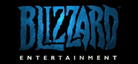
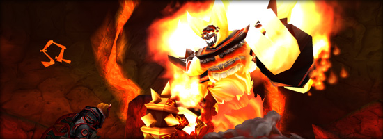
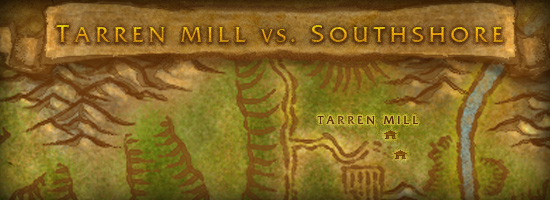

FrostFire
Welcome to FrostFire, a Blizzard Entertainment fan site. We will be keeping you up to date on the latest Blizzard news, as well as providing you with in depth discussions, strategies, and stories regarding everything Blizzard. Not familiar with one of their franchises and want to learn a little bit more? We've got you covered. Click on any of the corresponding links above pertaining to Warcraft, Starcraft, or Diablo, do get some of the latest news and in depth lore you may not have known about. Do you have any comments or concerns? Let us know in the contact section, and we will do our best to address it. Once again, welcome to FrostFire!
News
Today, November 21st, marks the 10th anniversary of World of Warcraft as well as the 20th anniversary of the Warcraft franchise. Needless to say, this is a big day for Blizzard or even a big month, if you consider that they just launched the 5th expansion of WoW last week, Warlords of Draenor. Starting November 21st, players will be able to participate in two unique events. A max level version of the Molten Core raid dungeon, and a Tarren Mill versus Southshore battle ground. The item level required for Molten Core is 615, however, when players defeat Ragnaros, they will be awarded a Core Hound mount, as well as a 640 item level head piece.

Tarren Mill versus Southshore is a limited time battleground that takes place in the Hillsbrad Foothills. It will be a team deathmatch style battleground, and players will be separated into different brackets based on their current level (90-99, and 100). There will also be unique titles for players who are victorious in their endeavors.

Both of these events will be available to players until the 5th of January, so if you're fairly casual, have no fear. There is plenty of time to complete both of these events. Good luck, and happy hunting!